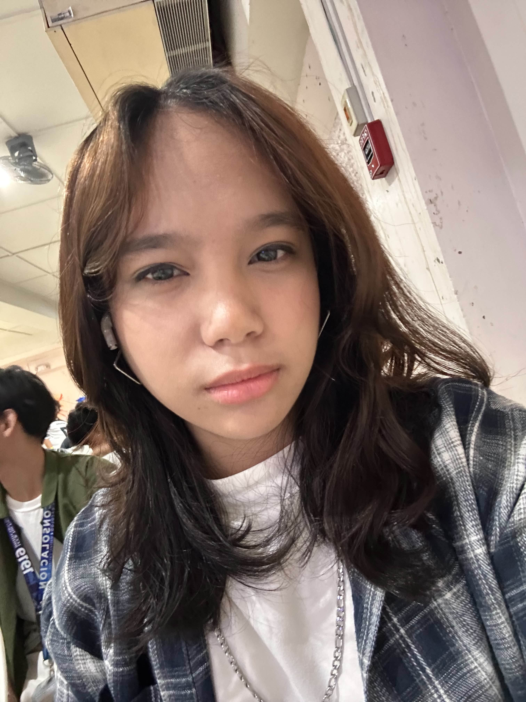

Welcome to my personal portfolio website. This is where I share my background, interests, skills, and goals as I continue growing as a BSIT student.
I am Isobel Beatriz T. Tupas, a student who is continuously learning, discovering new things, and finding ways to grow. Born on June 19, 2008, I am from Bacolod City, Philippines. I consider myself a creative, thoughtful, and compassionate person who values personal growth, meaningful connections, and self-expression.
I am someone who feels deeply and finds meaning in even the little things. I value kindness, honesty, and understanding. As someone who identifies with the INFJ personality type, I appreciate genuine connections and meaningful conversations. I believe that even the smallest act of kindness can make a difference in someone's life.
Creativity is an important part of who I am. I express myself through dancing, listening to music, reading books, and exploring stories that allow me to see different perspectives. I also enjoy traveling and appreciating nature, especially the peaceful sight of the sea and beautiful green landscapes.
I know that I still have so much to learn and discover. I believe that every experience, whether good or difficult, has something to teach me. I want to become more knowledgeable, confident, and capable while staying true to the values and individuality that make me who I am.

These are some of the qualities that describe who I am and how I approach life and the people around me.
I value empathy and understanding. I try to see things from different perspectives and treat others with kindness.
I enjoy expressing myself through different interests, exploring ideas, and appreciating art and stories.
I enjoy learning new things, discovering possibilities, and gaining experiences that help me improve.
"Be the only one, not the best one."
A reminder that individuality matters more than comparison.
Some basic details about me.
Isobel Beatriz Trinidad Tupas
June 19, 2008
Bachelor of Science in Information Technology
First Year College
Bacolod City, Philippines
INFJ